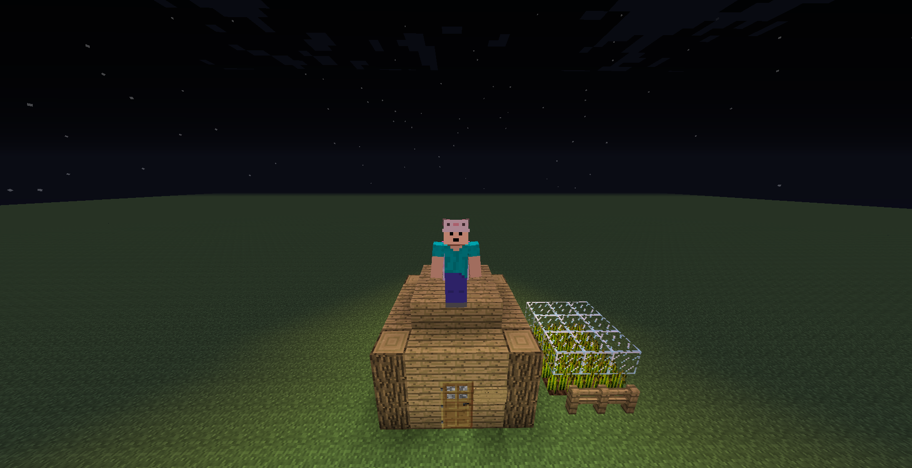

Work
> Index_
GameMinecraft
Other
> Game_
> Minecraft_
LobbyFlyPlugin
ロビーサーバーで飛行できるようになるプラグインです。
飛行機能以外にも、ログイン時にスポーン地点にテレポートする機能なども実装されています。
飛行機能以外にも、ログイン時にスポーン地点にテレポートする機能なども実装されています。
download: Github , Spigot